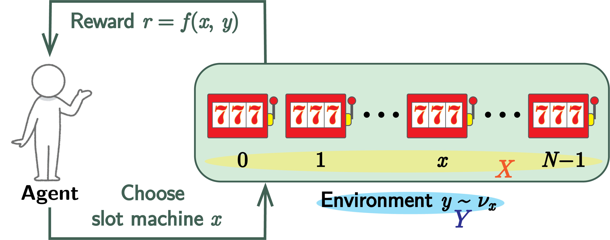

Page No.
| 「最適腕識別 (Best-arm-identification; BAI)」という名で知られるバンディット問題の量子版を考える．まず，BAI問題の量子的モデルを提案する．本モデルでは，学習するエージェントと環境の両方が量子であると仮定する．次に，BAIを解くための，量子振幅増幅を基にしたアルゴリズムを提案する．そして，問題のあらゆる状況に対するアルゴリズムの挙動を形式的に解析する．特に，本モデルが最適解を古典の場合よりも2乗のオーダーで速く得られることを示す． |

| Notation List | |
|---|---|
| $X$ | 「腕」の集合 |
| $N \in \mathbb{N}$ | 腕の数 $(N = |X|)$ |
| $Y$ | 環境の「内部状態」の集合 |
| $\nu_x: Y\to [0,\ 1]$ | $x\in X$ に基づいて選択される $Y$ の元に関する確率分布 |
| $f: X\times Y \to \{0,\ 1\}$ | 報酬 |
アルゴリズムは，以下の繰り返しにより構成される：
以上を $t$ 回繰り返す．最適腕識別の目標は，なるべく少ない回数 $T$ で最適腕 $x^*\in X$ 選択確率 $P_T(x)$ を最適化することを目標とする．
行動 $x\in X$ に対する報酬平均値
\begin{align} a_x = \sum_{y\in Y} \nu_x(y) f(x,\,y) \end{align}
は行動 $x$ により報酬が得られる確率そのものである．
\begin{align} Y^{x}_j := \{y\in Y\,|\,f(x,\,y) = j\} \end{align}
と定めると，$Y^{x}_0\cap Y^{x}_1 = \emptyset$ かつ $Y^{x}_0\cup Y^{x}_1 = Y$ であるから
\begin{align} a_x &= \sum_{y\in Y} \nu_x(y)f(x,\,y)\\ &= \sum_{y\in Y^{x}_0} \nu_x(y)f(x,\,y) + \sum_{y\in Y^{x}_1} \nu_x(y)f(x,\,y)\\ &= \sum_{y\in Y^{x}_0} \nu_x(y)\cdot 0 + \sum_{y\in Y^{x}_1} \nu_x(y)\cdot 1\\ &= \sum_{y\in Y^{x}_1} \nu_x(y). \end{align}
これは，行動 $x$ に対して報酬が得られる環境 $y$ になる確率の総和である．
最適腕識別において，$T$ 回の環境への作用を行った後の平均リグレット $R_T$ とエラー確率 $e_T := 1- P_T(x^*)$ の関係は
\begin{align} R_T \leq e_T. \end{align}
\begin{align} R_T &= \sum_{x\in X\backslash\{x^*\}}P_T(x)\varDelta_x \leq \sum_{x\in X\backslash\{x^*\}}P_T(x)\\ &= 1- P_T(x^*) = e_T \end{align}
以上まとめると，$R_T \leq e_T.$
論文では等号は含まれていない（つまり，$R_T\lt e_T$ としてある）．等号が成立するのは，すべての $x\in X\backslash\{x^*\}$ に対して $\varDelta_x = 1$ となる場合であるが，確かにそんな状況を考えても最適腕識別の設定としては面白くない．ただし，あり得ないわけではないので，ここでは等号も含めた形としている．
$j\in\{0,\ 1\}$ に対し， $X$ の部分集合
\begin{align} X_j = \{x\in X\,|\, f(x) = j\} \end{align}
を定義する．また，$j\in\{0,\ 1\}$ に対して
\begin{align} \DeclareMathOperator{\spn}{\mathrm{span}} \mathcal{H}_j = \spn\{\ket{x}\in\mathcal{H}\,|\, x\in X_j\} \end{align}
を定める．
$\mathcal{H}_0$ と $\mathcal{H}_1$ は互いに直交補空間の関係にある．
$\mathcal{H}$ 上の状態を表す単位ベクトルを
\begin{align} \ket{\varPsi} = \sum_{x\in X} \alpha_x \ket{x}\ \ \left(\alpha_x\in \mathbb{C},\, \sum_{x\in X}|\alpha_x|^2 =1\right) \end{align}
で表すとき，$p = \sum_{x\in X_1} |\alpha_x|^2$ を用いて
\begin{align*} \ket{\varPsi_1} &= \fraction{1}{\sqrt{p}}\sum_{x\in X_1} \alpha_x\ket{x} \in \mathcal{H}_1,\\ \ket{\varPsi_0} &= \fraction{1}{\sqrt{1-p}}\sum_{x\in X_0} \alpha_x\ket{x}\in \mathcal{H}_0 \end{align*}
と定めれば，$\ket{\varPsi_0},\ \ket{\varPsi_1}$ はそれぞれ単位ベクトルであり，
\begin{align} \ket{\varPsi} = \sqrt{p}\ket{\varPsi_1} + \sqrt{1-p}\ket{\varPsi_0} \end{align}
である．また，$\theta := \arcsin \sqrt{p}$ なる $\theta\in (0,\ \pi/2)$ が存在して
\begin{align*} \ket{\varPsi} = \sin\theta \ket{\varPsi_1} + \cos\theta \ket{\varPsi_0}. \end{align*}
$\ket{\varPsi_1},\ \ket{\varPsi_0}$ のノルムは
\begin{align*} \|\ket{\varPsi_1}\|^2 &= \fraction{1}{p} \left\|\sum_{x\in X_1} \alpha_x\ket{x}\right\|^2 = \fraction{1}{p} \sum_{x\in X_1} |\alpha_x|^2 = 1,\Rule{0px}{0px}{40px}\\ \|\ket{\varPsi_0}\|^2 &= \fraction{1}{1-p} \left\|\sum_{x\in X_0} \alpha_x\ket{x}\right\|^2 = \fraction{1}{1-p} \sum_{x\in X_0} |\alpha_x|^2\\ &= \fraction{1}{1-p} \left( \sum_{x\in X} |\alpha_x|^2 -\sum_{x\in X_1} |\alpha_x|^2 \right) = \fraction{1-p}{1-p} = 1. \end{align*}
よって，$\ket{\varPsi_1},\ \ket{\varPsi_0}$ は共に単位ベクトルである．また，これらを用いて
\begin{align*} \ket{\varPsi} &= \sum_{x\in X}\alpha_x\ket{x} = \sum_{x\in X_1}\alpha_x\ket{x} + \sum_{x\in X_0} \alpha_x\ket{x} \\ &= \sqrt{p} \cdot \fraction{1}{\sqrt{p}} \sum_{x\in X_1}\alpha_x\ket{x} + \sqrt{1-p} \cdot \fraction{1}{\sqrt{1-p}} \sum_{x\in X_0} \alpha_x\ket{x}\\ &= \sqrt{p} \ket{\varPsi_1} + \sqrt{1-p} \ket{\varPsi_0}. \end{align*}
ここで，$0\lt \sqrt{p}\lt 1$ であるから $\theta = \arcsin \sqrt{p}$ なる $\theta\in (0,\ \pi/2)$ が存在する．このとき $\sqrt{p} = \sin\theta,\ \sqrt{1-p} = \sqrt{1-\sin^2\theta} = \cos\theta$ であるから，$\theta$ を用いて $\ket{\varPsi}$ を以下のように書き換えられる：
\begin{align*} \ket{\varPsi} = \sin\theta \ket{\varPsi_1} + \cos\theta \ket{\varPsi_0}. \end{align*}
$p$ はマークされた要素のいずれかを観測する確率と解釈できる．振幅増幅における基本的な処理である．また，振幅増幅では $\ket{\varPsi}$ を $\mathcal{S} = \spn\{\ket{\varPsi_1},\ \ket{\varPsi_0}\}$ 上の単位ベクトルと捉えており，振幅増幅における時間発展は $\mathcal{S}$ 上のユニタリ変換として表現される（→ ）．ここで $\mathcal{S} \simeq \mathbb{C}^2$ であることから，$\ket{\varPsi_1} = [1\,\,\,0]^\trp,\ \ket{\varPsi_0} = [0\,\,\,1]^\trp$ と表現すれば，$\ket{\Psi} \simeq [\sin\theta \,\,\,\cos\theta]^\trp$ である．このように，振幅増幅を2次元の変換と対応付けるとスムーズに議論ができる．
関数 $f:X\to \{0,\,1\}$ に依存する作用素で，以下を満たすものを【オラクル (oracle)】と呼ぶ：
\begin{align} O_f\ket{x} = (-1)^{f(x)}\ket{x} = \left\{ \begin{array}{cc} -\ket{x} & (x\in X_1) \\ \ket{x} & (x\in X_0) \end{array}\right.. \end{align}
\begin{align} O_f = \mathbb{I} -2\sum_{x\in X_1}\ketbra{x}{x}. \end{align}
まず，$x\in X_1$ に対して
\begin{align} O_f\ket{x} = (-1)^1\ket{x} = -\ket{x}. \end{align}
次に，$x\in X_0$ に対して
\begin{align} O_f\ket{x} = (-1)^0\ket{x} = \ket{x}. \end{align}
よって
\begin{align} O_f &= \sum_{x\in X_0}\ketbra{x}{x} - \sum_{x\in X_1}\ketbra{x}{x}\\ &= \sum_{x\in X_0}\ketbra{x}{x} + \sum_{x\in X_1}\ketbra{x}{x} - \sum_{x\in X_1}\ketbra{x}{x} - \sum_{x\in X_1}\ketbra{x}{x}\\ &= \sum_{x\in X}\ketbra{x}{x} -2\sum_{x\in X_1}\ketbra{x}{x}\\ &= \mathbb{I} -2\sum_{x\in X_1}\ketbra{x}{x} \end{align}
における $\ket{\varPsi_1},\ \ket{\varPsi_0}$ に対して
\begin{align} O_f\ket{\varPsi_1} = -\ket{\varPsi_1},\quad O_f\ket{\varPsi_0} = \ket{\varPsi_0}. \end{align}
さらに，
\begin{align} &\braket{\varPsi_1|O_f|\varPsi_1} = -1,\quad \braket{\varPsi_0|O_f|\varPsi_0} = 1\Rule{0px}{0px}{10px}\\ &\braket{\varPsi_0|O_f|\varPsi_1} = \braket{\varPsi_1|O_f|\varPsi_0} = 0.\\ \end{align}
\begin{align} O_f\ket{\varPsi_1} &= O_f\left(\fraction{1}{\sqrt{p}} \sum_{x\in X_1} \alpha_x\ket{x}\right)\\ &= \fraction{1}{\sqrt{p}} \sum_{x\in X_1} \alpha_x O_f\ket{x}\\ &= \fraction{1}{\sqrt{p}} \sum_{x\in X_1} \alpha_x (-\ket{x})\\ &= -\fraction{1}{\sqrt{p}} \sum_{x\in X_1} \alpha_x \ket{x}\\ &= -\ket{\varPsi_1}, \Rule{0px}{0px}{10px}\\ O_f\ket{\varPsi_0} &= O_f\left(\fraction{1}{\sqrt{p}} \sum_{x\in X_0} \alpha_x\ket{x}\right)\\ &= \fraction{1}{\sqrt{1-p}} \sum_{x\in X_0} \alpha_x O_f\ket{x}\\ &= \fraction{1}{\sqrt{1-p}} \sum_{x\in X_0} \alpha_x \ket{x}\\ &= \ket{\varPsi_0}. \end{align}
故に，
\begin{align} &\braket{\varPsi_1|O_f|\varPsi_1} = \bra{\varPsi_1}(-\ket{\varPsi_1}) = -\braket{\varPsi_1|\varPsi_1} = -1,\\ &\braket{\varPsi_0|O_f|\varPsi_0} = -\braket{\varPsi_0|\varPsi_0} = 1,\\ &\braket{\varPsi_0|O_f|\varPsi_1} = \bra{\varPsi_0}(-\ket{\varPsi_1}) = -\braket{\varPsi_0|\varPsi_1} = 0,\\ &\braket{\varPsi_1|O_f|\varPsi_0} = -\braket{\varPsi_1|\varPsi_0} = 0,\\ \end{align}
\begin{align} O_f\ket{\varPsi_1} &= (\mathbb{I} -2\sum_{x\in X_1} \ketbra{x}{x})\ket{\varPsi_1}\\ &= \ket{\varPsi_1} -2\sum_{x\in X_1} \braket{x|\varPsi_1} \ket{x}\\ &= \ket{\varPsi_1} -2\sum_{x\in X_1} \fraction{\alpha_x}{\sqrt{p}} \ket{x}\\ &= \ket{\varPsi_1} -2 \fraction{1}{\sqrt{p}} \sum_{x\in X_1} \alpha_x \ket{x}\\ &= \ket{\varPsi_1} -2 \ket{\varPsi_1} = -\ket{\varPsi_1} \Rule{0px}{0px}{30px}\\ O_f\ket{\varPsi_0} &= (\mathbb{I} -2\sum_{x\in X_1} \ketbra{x}{x})\ket{\varPsi_0}\\ &= \ket{\varPsi_0} -2\sum_{x\in X_1} \braket{x|\varPsi_0} \ket{x}\\ &= \ket{\varPsi_0} -2\sum_{x\in X_1} 0\cdot \ket{x}\\ &= \ket{\varPsi_0} \end{align}
あとは証明１と同じ．
この命題により，オラクル $O_f$ は $\mathcal{S}$ 上において
\begin{align} O_f \simeq \twobytwo{-1}{0}{0}{1}. \end{align}
であることがわかる．
状態 $\ket{\mathbf{0}} := \ket{0}^{\otimes n}$ を で導入した $\ket{\varPsi}$ に変換するユニタリ演算子を $A$ とする：
\begin{align} \ket{\varPsi} = A\ket{\mathbf{0}}. \end{align}
また $S_0 = 2 \ketbra{\mathbf{0}}{\mathbf{0}} - \mathbb{I}$ とし，これらを用いて演算子 $R_\varPsi$ を
\begin{align*} R_\varPsi = AS_0 A^{-1} \end{align*}
と定義する．これを状態 $\ket{\varPsi}$ に関する【反射演算子 (reflection operator)】と呼ぶ．
状態 $\ket{\varPsi}$ に関する反射演算子 $R_\varPsi$ は
\begin{align*} R_\varPsi = 2\ketbra{\varPsi}{\varPsi} -\mathbb{I} \end{align*}
と書き換えることができる．また，$R_\varPsi \ket{\varPsi} = \ket{\varPsi}$ が成立する．
演算子 $A$ はユニタリ，つまり $A^{-1} = A^\dagger$ である（ただし $A^\dagger$ は $A$ の随伴行列）ことを用いて，
\begin{align*} R_\varPsi &= A(2\ketbra{\mathbf{0}}{\mathbf{0}} -\mathbb{I}) A^{-1} = 2 A\ketbra{\mathbf{0}}{\mathbf{0}}A^{-1} - AA^{-1}\\ &= 2 A\ketbra{\mathbf{0}}{\mathbf{0}}A^\dagger - \mathbb{I} = 2 (A\ket{\mathbf{0}})(A\ket{\mathbf{0}})^\dagger - \mathbb{I}\\ &= 2\ketbra{\varPsi}{\varPsi} -\mathbb{I}. \end{align*}
$\ket{\varPsi}$ が単位ベクトルであることに注意して上の結果を用いると，
\begin{align*} R_\varPsi \ket{\varPsi} &= (2\ketbra{\varPsi}{\varPsi} -\mathbb{I} ) \ket{\varPsi} = 2 \braket{\varPsi|\varPsi} \ket{\varPsi} - \ket{\varPsi} \\ &= 2\ket{\varPsi} - \ket{\varPsi} = \ket{\varPsi}. \end{align*}
における $\ket{\varPsi_1},\ \ket{\varPsi_0}$ に対して
\begin{align} &\braket{\varPsi_1|R_\varPsi|\varPsi_1} = -\cos 2\theta,\quad \braket{\varPsi_0|R_\varPsi|\varPsi_0} = \cos 2\theta\Rule{0px}{0px}{10px}\\ &\braket{\varPsi_0|R_\varPsi|\varPsi_1} = \braket{\varPsi_1|R_\varPsi|\varPsi_0} = \sin 2\theta.\\ \end{align}
\begin{align} \braket{\varPsi_1|R_\varPsi|\varPsi_1} &= \braket{\varPsi_1|(2\ketbra{\varPsi}{\varPsi} -\mathbb{I})|\varPsi_1}\\ &= 2 |\braket{\varPsi|\varPsi_1}|^2 -1 = 2\sin^2\theta -1\\ &= -\cos 2\theta, \Rule{0px}{0px}{10px}\\ \braket{\varPsi_0|R_\varPsi|\varPsi_0} &= \braket{\varPsi_0|(2\ketbra{\varPsi}{\varPsi} -\mathbb{I})|\varPsi_0}\\ &= 2 |\braket{\varPsi|\varPsi_0}|^2 -1 = 2\cos^2\theta -1\\ &= \cos 2\theta, \Rule{0px}{0px}{10px}\\ \braket{\varPsi_0|R_\varPsi|\varPsi_1} &= \braket{\varPsi_0|(2\ketbra{\varPsi}{\varPsi} -\mathbb{I})|\varPsi_1}\\ &= 2 \braket{\varPsi_0|\varPsi}\braket{\varPsi|\varPsi_1} -0 = 2\sin \theta\cos \theta\\ &= \sin 2\theta, \Rule{0px}{0px}{10px}\\ \braket{\varPsi_0|R_\varPsi|\varPsi_1} &= \overline{\braket{\varPsi_1|R_\varPsi|\varPsi_0}} = \sin 2\theta.\\ \end{align}
この命題により，反射作用素 $R_\varPsi$ は $\mathcal{S}$ 上において
\begin{align} R_\varPsi \simeq \twobytwo{-\cos 2\theta}{\sin 2\theta}{\sin 2\theta}{\cos 2\theta}. \end{align}
であることがわかる．
オラクル $O_f$ と状態 $\ket{\varPsi}$ に関する反射演算子 $R_\varPsi$ の積による演算子を $Q$ とする：
\begin{align*} Q = R_\varPsi O_f. \end{align*}
で定義した $\ket{\varPsi_1},\ \ket{\varPsi_0}$ に対して
\begin{align*} Q\ket{\varPsi_1} &= \cos 2\theta \,\ket{\varPsi_1} - \sin 2\theta \,\ket{\varPsi_0},\\ Q\ket{\varPsi_0} &= \sin 2\theta \,\ket{\varPsi_1} + \cos 2\theta \,\ket{\varPsi_0}\\ \end{align*}
であり，故に $\ket{\varPsi}$ に対して
\begin{align*} Q\ket{\varPsi} &= \sin 3\theta \,\ket{\varPsi_1} + \cos 3\theta \,\ket{\varPsi_0} \end{align*}
である．更に，
\begin{align*} Q^n \ket{\varPsi} &= \sin ((2n + 1)\theta) \,\ket{\varPsi_1} + \cos ((2n +1)\theta) \,\ket{\varPsi_0} \end{align*}
である．
， における考察により，
\begin{align} Q = R_\varPsi O_f &\simeq \twobytwo{-\cos 2\theta}{\sin 2\theta}{\sin 2\theta}{\cos 2\theta} \twobytwo{-1}{0}{0}{1}\\ &= \twobytwo{\cos 2\theta}{\sin 2\theta}{-\sin 2\theta}{\cos 2\theta}. \end{align}
故に，以下の結果を得ることができる：
\begin{align} &\ket{\varPsi_1} \simeq \twovec{-\cos 2\theta}{\sin 2\theta},\ \ket{\varPsi_0} \simeq \twovec{\sin 2\theta}{\cos 2\theta}\\ &Q\ket{\varPsi} \simeq \twobytwo{\cos 2\theta}{\sin 2\theta}{-\sin 2\theta}{\cos 2\theta} \twovec{\sin \theta}{\cos \theta}\\ &\hspace{10mm} = \twovec{\cos 2\theta \sin \theta + \sin 2\theta \cos \theta}{-\sin 2\theta \sin \theta + \cos 2\theta \cos \theta} = \twovec{\sin 3\theta}{\cos 3\theta} \end{align}
これらの結果はすべて上記命題と対応している．
腕 $x$ を選択した際の環境の内部状態に関する分布 $\nu_x(y)$ を用いて，$\mathcal{H}_Y$ に属する状態
\begin{align} \ket{\psi_x} = \sum_{y\in Y} \sqrt{\nu_x(y)} \ket{y}\in \mathcal{H}_Y \end{align}
を定義する．また，$\mathcal{H}$ 上の作用素 $O_e$ を以下で定める：
\begin{align} O_e = \sum_{x\in X} \ketbra{x,\,\psi_x}{x,\,\mathbf{0}}. \end{align}
このとき，$\mathcal{H}$ 上の作用素 $A' := O_e (A\otimes \mathbb{I})$ は
\begin{align} A' = \sum_{x\in X} \alpha_x \ketbra{x,\,\psi_x}{\mathbf{0},\,\mathbf{0}} = \sum_{x\in X}\sum_{y\in Y} \alpha_x\sqrt{\nu_x(y)} \ketbra{x,\,y}{\mathbf{0},\,\mathbf{0}} \end{align}
と表すことができる．
$\ket{\varPsi} = A'\ket{\mathbf{0}}$ として $\mathcal{H} = \mathcal{H}_X\otimes \mathcal{H}_Y$ 上の振幅増幅を考えるとき， の $p$ にあたる量は
\begin{align} p = \sum_{(x,y) \in W_1} |\alpha|^2 \nu_x(y) \end{align}
である．ただし，$W_1 = \{(x,\,y)\in X\times Y\,|\,f(x,\,y) = 1\}$ とする．
また，この $p$ は，状態 $\ket{\varPsi}$ における腕 $x$ の選択に関する報酬平均値の期待値 $\mathbb{E}_X[a_x]$ である．
状態 $\ket{\varPsi}$ において腕 $x$ が選択される確率を $P_0(x)$ とすれば
\begin{align} P_0(x) = \sum_{y\in Y} |\braket{x,y|\varPsi}|^2 = |\alpha|^2. \end{align}
が成り立つ．よって
\begin{align} p &= \sum_{(x,y) \in W_1} |\alpha|^2 \nu_x(y)\\ &= \sum_{x\in X} \sum_{y\in Y_1^x} |\alpha|^2\nu_x(y) \\ &= \sum_{x\in X} |\alpha|^2 \sum_{y\in Y_1^x} \nu_x(y)\\ &= \sum_{x\in X} P_0(x) a_x = \mathbb{E}_X[a_x]. \end{align}
QBAIにおいて要素 $x\in X$ が $n$ ステップの振幅増幅の後に推薦される確率 $P_n(x)$ は
\begin{align} P_n(x) = |\alpha_x|^2 \left( 1 + \fraction{(a_x -p)(\sin^2((2n+1)\theta)-p)}{p(1-p)}\right) \end{align}
以下，$s = \sin((2n+1)\theta),\ c = \cos((2n+1)\theta)$ とする．
\begin{align} P_n(x) &= \left\|\sum_{y\in Y}\ketbra{xy}{xy}\cdot G^n\ket{\varPsi}\right\|^2\\ &= \left\| \sum_{y\in Y_1^{x}}\braket{xy|G^n|\varPsi}\ket{xy} + \sum_{y\in Y_0^{x}}\braket{xy|G^n|\varPsi}\ket{xy}\right\|^2\\ &= \sum_{y\in Y_1^{x}}|\braket{xy|G^n|\varPsi}|^2 + \sum_{y\in Y_0^{x}}|\braket{xy|G^n|\varPsi}|^2\\ &= \sum_{y\in Y_1^{x}}s^2\fraction{|\alpha_x|^2\nu_x(y)}{p} + \sum_{y\in Y_0^{x}}c^2\fraction{|\alpha_x|^2\nu_x(y)}{1-p}\\ &= |\alpha_x|^2\left( \fraction{s^2}{p}\sum_{y\in Y_1^{x}}\nu_x(y) + \fraction{c^2}{1-p}\sum_{y\in Y_0^{x}} \nu_x(y)\right) \\ &= |\alpha_x|^2\left( \fraction{s^2}{p}a_x + \fraction{c^2}{1-p}(1-a_x)\right) \\ &= \fraction{|\alpha_x|^2}{p(1-p)}(s^2a_x(1-p) + c^2(1-a_x)p)\\ &= \fraction{|\alpha_x|^2}{p(1-p)}(s^2a_x + (1-s^2)p -a_x p)\\ &= \fraction{|\alpha_x|^2}{p(1-p)}(a_xs^2+ p c^2 -a_x p)\\ &= \fraction{|\alpha_x|^2}{p(1-p)}(a_xs^2+ p - ps^2 -a_x p)\\ &= \fraction{|\alpha_x|^2}{p(1-p)}(p -p^2 +a_xs^2- ps^2 -a_x p + p^2)\\ &= \fraction{|\alpha_x|^2}{p(1-p)}(p(1-p) +(a_x- p)(s^2 -p))\\ &= |\alpha_x|^2\left(1 +\fraction{(a_x- p)(s^2 -p)}{p(1-p)}\right). \end{align}